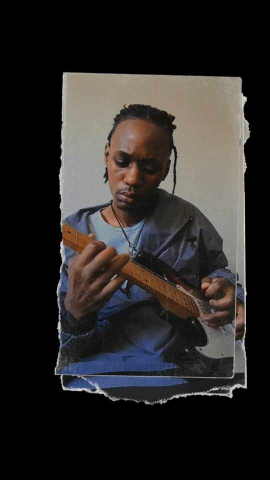

Hey there! I’m 7ovreighn (pronounced Sovereign), a Zimbabwean (currently in South Africa) musician and storyteller blending different styles and emotions into my music. My sound reflects my journey—one that’s raw, honest, and deeply personal, yet relatable to anyone who’s chasing dreams and navigating life’s ups and downs.
I create music that draws from diverse genres, blending elements of indie pop, rock, rap, and trap. Each track I produce is a reflection of my emotions, experiences, and inspirations. My goal is to take listeners on a journey through sound, fusing catchy melodies with meaningful lyrics that resonate.
“Good things come to those who hustle” – J Cole
My love for music began at a young age when I first picked up a guitar. I spent countless hours teaching myself to play, experimenting with sounds, and writing songs. Over the years, I’ve grown from playing in my room to releasing my own music and building my career step by step.
It hasn’t been easy, but every challenge has shaped who I am today. I’ve learned to balance creativity with the business side of music, wearing many hats as a self-managed artist. With every song, I aim to reach new heights and connect with more people who vibe with my sound.
I have big dreams of becoming an internationally recognized artist while staying true to my roots. I’m working on new music, creating more visual content, and even planning to release merch soon.
Thank you for being here, for listening, and for believing in my vision. Your support means everything, and I can’t wait to share more of my music, visuals, and behind-the-scenes moments with you.